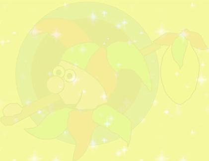

Welcome to Fool's Paradox


This is a restored version of Fools Paradox.
Since the devastating loss of Cosmic_Fool it has been my intention along with
many of Kev's Friends online to try to keep a part of the man alive. that part
is through his writing on this site. Coz was working on a major update to the
site which had entailed an almost total re write, unfortunately he never
got to finish that or upload any of the new writing he was working on :( With
the exception of this brief introduction passage and the inclusion of a new
guestbook all the work here was written by Cosmic_Fool and as such remains under
copyright protection.
Kev we miss you greatly mate and I sincerely hope you do not mind that I am re hosting your site so that your wisdom, knowledge and humour can still be shared by all of us who knew you and also passed on to those who didn't have that pleasure.
In Memory of Kev the Cosmic_Fool
Who passed over on 9th November 2006